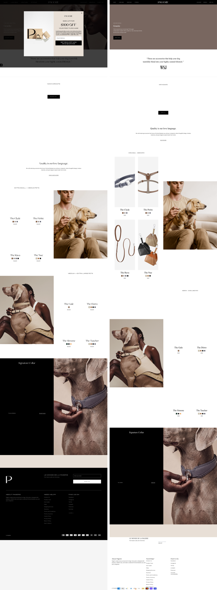
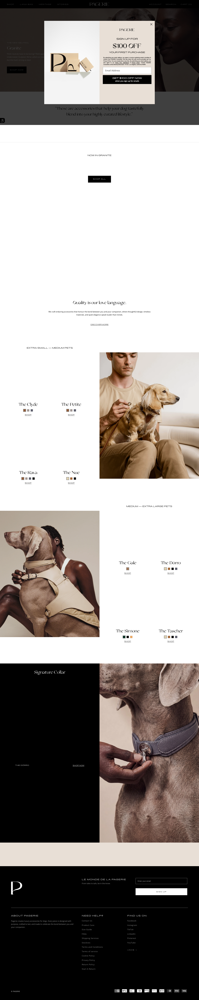
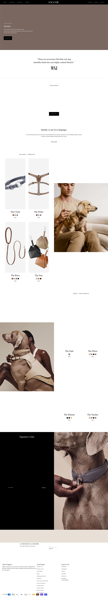

PERFECT WEB CLONE v4 · 工具运行过程 + 诚实诊断
V4 的设计是五层流水线，工具全是确定性 Python（不调用大模型），Claude Code 只在第 4 层做"按差异修组件"的判断：
关键点：第 0 层就应该把所有原图、字体、视频原样抓全并本地化（standalone）。换成新图（"洗稿"）是之后的独立步骤，不属于复刻本身。
注意：设计里的 Layer 1–3（IR→识别器→生成）目前是空壳（generate_code 产出空 div；blob 工具无法把 2.2MB DOM 经 MCP 传输）。所以我走的是 V4 里唯一能出效果的"分段 + 逐段子 Agent"路径（继承自 v3 的骨架）：
| 步骤 | 工具 / 动作 | 结果 |
|---|---|---|
| 0 抓取 | extract_page（settle 9s，全页截图，download_resources=true） | ✓ 但抓取不全（见③） |
| 1 分段 | get_section_plan | 13 段 |
| 2 建壳 | assemble_project（建沙箱+写 App.jsx/index.css+拷 33 资源） | ✓ |
| 3 逐段复刻 | 13 个子 Agent 并发，每个 get_section_data 查询本段真实 HTML+CSS+图+链接 → 转干净 JSX | ✓ 是按 section 分别 query 的 |
| 4 组装构建 | build_project（npm build） | ✓ exit 0 |
| 5 校验 | 指纹 / 体积 / SSIM 门禁 | 指纹✓ 体积✓(代码) SSIM✗ |
| 6 修复 | 去指纹、手动补下 20 张图、中和伪造视频区块 | 部分 |
回答你的三个问题：是，用了 Playwright 爬虫（extract_page）；是，分 13 个 section 分别 query（get_section_data）；但底层抓取没抓全，所以 section 查询拿到的图片数据大量为 local_url=null。
| 文件 | 大小 | 内容 |
|---|---|---|
dom.json | 2.19 MB | 完整 DOM + 计算样式 + 盒模型几何 |
css.json | 718 KB | 29 张样式表 + 73 动画 + 50 过渡 + 媒体查询 |
sections_full.json | 443 KB | 13 段各自的真实 HTML + 清洗后 CSS + 图/链接 |
raw.html / manifest.json | 332 KB / 768 KB | 原始 HTML / 资源清单 |
| 截图 | — | 1440 全页参考图（ground truth） |
细分：src= 图 56 张、data-src= 懒加载 23 张、data-image-url= 悬停换图 33 张。抓取器只认 src= 的一部分（21 张），懒加载图全漏 → 子 Agent 只能临时 hotlink 源站（我事后手动补下了 20 张并本地化）。
| 现象 | 根因 | 归属层 |
|---|---|---|
| 大量商品图最初指向源站 / 部分缺失 | 抓取器不触发懒加载，107 张只下 21 张 | Layer 0 抓取 |
| 标题字体不对、整页纵向逐步错位、页高偏高 | 品牌字体没下载（主题相对路径未解析）→ 标题回退字体，行高变化累积 | Layer 0 抓取 |
| 顶部和原图差异大 | 原站截图顶部叠了 $900 GIFT 订阅弹窗，抓取没关掉浮层就截图（基准图被污染） | Layer 0 抓取 |
| 页面中段出现一大块伪造弹窗图（已被我中和） | 视频 iframe 没抓，被替换成弹窗静态快照 | Layer 0 抓取 |
| SSIM 仅 0.30（数值层面） | 以上叠加 + 全页 SSIM 对累计纵向偏移极敏感（手工精修的 db-longbow 同打分器也只有 0.77） | 度量特性 |
| IR 自动生成没用上 | Layer 1–3（IR/识别器/codegen）目前是空壳 | Layer 1–3 未完成 |

结构/配色/两个商品网格/犬只大片/Signature Collar/页脚 基本对齐；主要差异在顶部（弹窗浮层）与字体导致的纵向漂移。


代码干净、可离线、一段一组件、构建 exit 0 —— 这些都达标。短板纯粹在"抓取完整度 + 字体 + 弹窗"。
check_weight 把 MCP 服务器跑崩的稳定性 bug；体积门禁拆分 代码 / 内容图 预算。交付物：showcase/products/pagerie/（npm install && npm run build && npx vite preview）。本地预览：http://localhost:5191/。本报告：docs/pagerie-report/index.html。